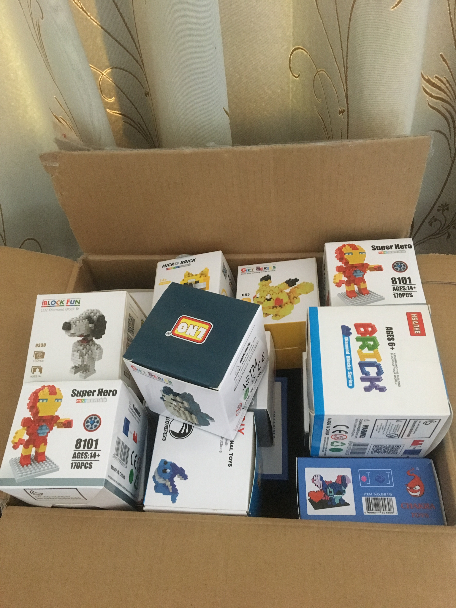
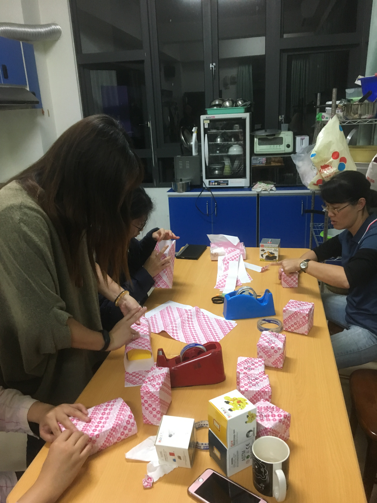
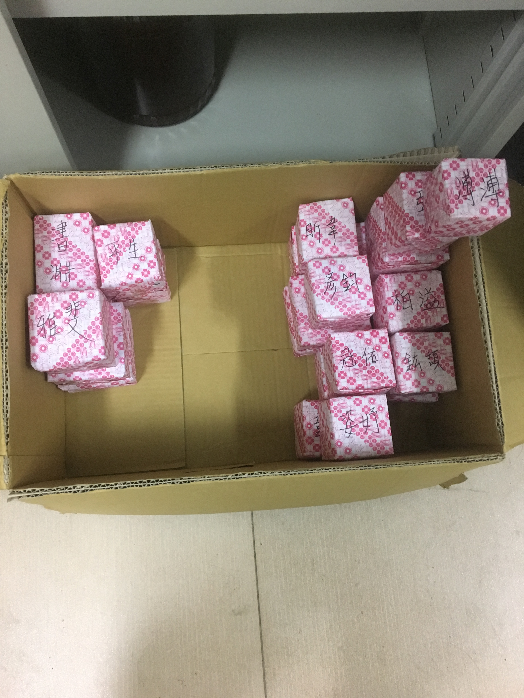
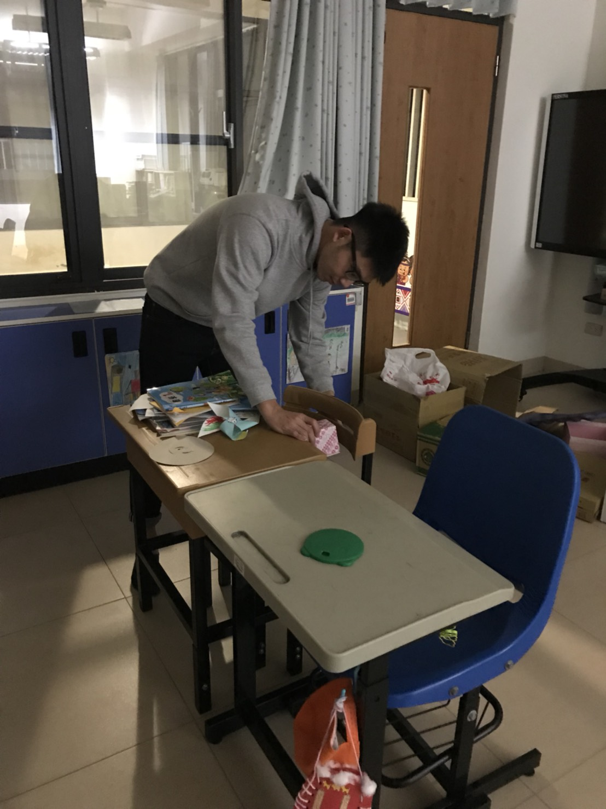
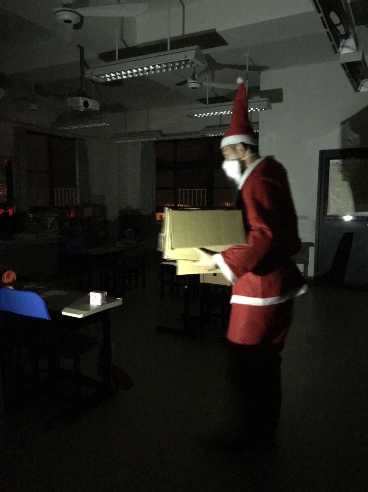
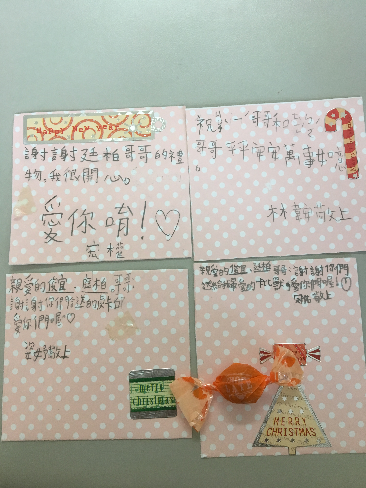

到小林服役大概有兩個月了
有時候總是會想說除了幫忙學校以外，能夠為孩子做些什麼
記得在成功嶺受訓的時候，教官講了一個例子給我們聽
有一個役男在離島的學校服役，那邊的資源也比較缺乏
全校大概100個學生，他在快到聖誕節的時候
透過FB發起了一個活動，他想要送每個孩子一樣禮物
他先統計後發在FB讓朋友們認領，然後他再請他們寄到離島的學校去
另那個役男驚訝的是當他問小朋友們如果可以許一個願望他們想要甚麼禮物的時候
他原本以為會有很昂貴的東西，結果他們要的只是很普通的像是文具、鉛筆盒等等
最貴的只是想要一雙球鞋，因此他在聖誕節那一天化身為聖誕老人
在小朋友還沒到學校的時候就先將禮物放在他們的抽屜，給他們驚喜
當時的我在聽到這個故事後，其實我的眼眶有點泛淚，教官說，在服役期間
有時候可以多想想，可以為孩子們做些甚麼，或許很微小，但是卻可以讓他們開心一陣子
因此..........
我想要送小朋友們一個心目中喜歡的卡通人物積木，我上網找到loz積木
想說在國小階段應該都有喜歡的卡通人物，自己可以將它組裝起來，應該會很有成就感
所以我需要做的事情有
- 統計全校24個小朋友喜歡的卡通人物
- 不可以被發現是要送他們禮物，因此我說了善意的謊言是要做研究XD
- 役男沒什麼錢，因此我要找到價格不會太貴的賣家
- 而且我希望這個賣家的積木能夠包含24位小朋友想要的卡通人物
恩....我開始在蝦皮、奇摩拍賣、露天、PChome找了又找，最後在露天找到一個賣家有賣超多的loz積木
我就開始每節下課跑去問小朋友喜歡甚麼卡通人物，請他們說2-3個，然後記下來，而且還
要一直強調我是要做研究
想要比較我那個年代和他們這年代看的卡通有甚麼不一樣XDDD，花了兩天大概統計完後
，發現有些小朋友喜歡的
賣家沒有賣，這個時候呢我就去找那個小朋友說他還有沒有喜歡別的然後引導他像是神奇 寶貝啦，還是七龍珠阿
還是海綿寶寶阿，故意導向有賣的，最後終於完成啦，而且全校24個大概只有一點點的人
是選一樣的
然後就下訂單啦，後來被主任知道後主任和我和另一個役男我們一起分擔，主任人超好的
收到貨啦

感謝老師幫忙幫我們包裝，看起來超精美的!


在12月24號那天剛好禮拜天，收假回學校的晚上我和另一個役男到各教室放禮物啦
剛好隔天我要扮聖誕老公公講故事，就穿上衣服然後我們會po小林的粉專預告!


到了隔天，他們早自修在學校應該都有看到啦，早上是聖誕表演
He has a red red coat
然後下課後收到卡片和糖果啦

希望他們都有拚起來然後好好長大啊!